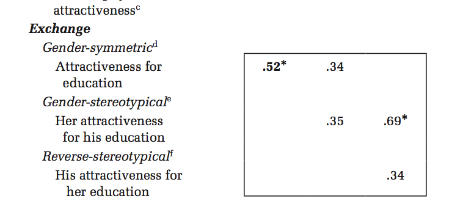

In a 2014 article in the American Sociological Review, Elizabeth McClintock claimed to find little evidence of exchange of beauty for status in union formation, based on data of young adults. I wrote a critical comment on this article that is now published in the ASR1, and McClintock wrote a response. In her response, McClintock falsely accused me of model mis-specification in part of the analysis, despite the fact that my model is identical to her own model. This accusation stems from McClintock’s own confusion regarding how to interpret model parameters. In this blog post, I explain this problem of interpretation.
Interpreting interaction terms
McClintock suggests at several points in her response that I fit alternate log-linear models that are distinct from her own and that these models are in some way mis-specified. This claim is a factually incorrect distraction. I estimate the exact same model as McClintock. The fundamental disagreement is over the correct interpretation of parameter estimates in models that allow the effect of beauty to differ for men and women.
McClintock’s estimates from her original article (Table 7) are shown below. The key parameters of interest are what McClintock refers to as “Gender-Symmetric Exchange” and “Gender-Stereotypical Exchange”. These numbers measure the degree to which physical beauty is exchangeable for another partner’s education.

McClintock and I agree on the estimation and interpretation of model 1a. As the name implies, “gender-symmetric exchange” in model 1a assumes that the effect of beauty (i.e. its exchangeability for higher levels of education in a partner) is the same for men and women. These results are in the form of log-odds ratios so the value of 0.524 is both substantively large and statistically significant.
The disagreement arises over how to interpret the numbers in model 1b. The goal of model 1b is to relax the assumption that the beauty effect is the same for men and women. How might one go about this task? You do not need special familiarity with log-linear models to answer this question. Anyone who has taken a first year graduate sequence in statistics should know how to allow effects to vary across categories.
Lets say that you want to know whether the effect of \(x\) on \(y\) in an OLS regression model is different for men and women. Effectively you want two different slopes that we can call \(b_m\) and \(b_w\) for men and women, respectively. You can approach this issue in three different ways:
Interact a dummy variable for women with \(x\) in the model. The main effect of \(x\) in this model will give you the effect for men, \(b_m\), and the interaction term will give you the difference, \(b_w-b_m\), in the two effects.
Interact a dummy variable for men with \(x\) in the model. The main effect of \(x\) in this model will give you the effect for women, \(b_w\), and the interaction term will give you the difference, \(b_m-b_w\), in the two effects.
Create two separate variables that give you the main effects for \(b_m\) and \(b_w\), respectively, but not the difference between the effects.
If you have any two of these values (i.e. a main effect and difference or two main effects) you can derive the third, so the choice of model is primarily driven by ease of interpretation relative to the question at hand. The standard practice is to do either (1) or (2) because researchers often want to directly test whether the difference in effect (i.e. \(H_0:b_m=b_w\)) is statistically significant. This sort of approach can get you into a bit of a pickle, however, because its possible for only one main effect to be statistically distinguishable from zero while the difference between the two effects is statistically indistinguishable from zero. Is it more appropriate in this case to assume that the effects are the same or that one effect is zero and the other non-zero? This situation is exactly what happens in McClintock’s case.
In the table below, I show the parameter estimates for men’s and women’s beauty effects using all three approaches. I also label each approach where it applies to a model used in my response.
| Beauty effect on exchange | Symmetric (1a) | Men as reference (1b) | Women as reference | Separate Effects (1c) |
|---|---|---|---|---|
| Gender-Symmetric | 0.52* | |||
| Men | 0.34 | 0.34 | ||
| Women | 0.69* | 0.69* | ||
| Difference, Women-Men | 0.35 | |||
| Difference, Men-Women | -0.35 |
For the last three columns, you can derive the numbers for any of the other models from the numbers in a given model because these models are the same. Although each model removes one value, the numbers within each row are identical across columns 2-4, because they measure the same underlying thing. Also note that the gender-symmetric effect from the first column is in between the two separate gender effects from the fourth column, as you would expect. Everything in this table makes sense. The beauty exchange effect for women is substantively large and statistically significant. The beauty exchange effect for men is more uncertain. We cannot confidently say that it is different than zero. However, we also cannot confidently say that it is any different than the effect for women. The model fit statistics (not shown here) prefer the symmetric version of the model, so in the absence of any priors, we should probably assume that there is a real beauty effect of similar magnitude for men and women.2
McClintock uses method (1) in her model 1b. She estimates the main beauty effect for men, and the difference in the beauty effect between men and women. Neither of these effects is statistically significant. In my response, I use method (3) in my model 1c to show that McClintock’s approach left out the most important effect which is the direct effect of beauty for women, i.e. stereotypical exchange. The results for women’s beauty effect are both substantively large and statistically significant. The beauty effect for men is far more equivocal. Its important to note that there is no disagreement between myself or McClintock in how to estimate these values. I am able to reproduce her models 1a and 1b in my comment, and she is able to replicate my model 1c in her response.
The point of this part of my comment was that McClintock used misleading language in both the table and text of her article to describe these effects in a way that made it seem like the beauty effect for women was equivocal when it was clearly unequivocal. I won’t belabor all of those points here, but I do want to address the issue of labeling in her original table because it came up again in McClintock’s response, and suggests to me that she doesn’t fully understand her own models.
If you look again at McClintock’s table above, you will see that she labels the 0.34 effect in model 1b as a “gender-symmetric” effect, whereas I have identified it in my table above and in my comment as the effect for men only. This is the root of our entire disagreement. While it is true that the effect for men is estimated by the same variable that estimates the gender-symmetric effect, the existence of a separate dummy variable for women’s beauty effect means that this variable can no longer be interpreted in the same way in model 1b. One does not need to be technically sophisticated to see that if the model includes a term that identifies women’s beauty effect, then a “gender-symmetric” effect cannot also exist. The entire point of model 1b is to relax the assumption of gender symmetry. Furthermore, the label of “gender stereotypical exchange” in McClintock’s table for the 0.35 number is also misleading. This number is the difference in effect for men and women, not women’s effect alone. One must add the 0.34 and 0.35 together to get the full effect of women’s beauty which is 0.69.
When I wrote the comment, I assumed that these misleading labels were just a result of sloppy but forgivable editing. As someone who does a lot of quantitative work, I know how many versions of a table one can go through and how errors in thinking can easily slip by you. I did not expect McClintock to defend what are clearly misleading labels and I instead figured that she would focus on other aspects of her argument, such as the robustness of the results. Instead, McClintock double downed on this mis-interpretation.
Here is the relevant part of McClintock’s response (Table 1):

She replicates my results exactly but continues to incorrectly label men’s beauty effect (“reverse stereotypical exchange”) in the second column as a “gender symmetric” effect, despite the fact that the number is identical to the “reverse stereotypical” exchange number in the third column. However, she goes even further than that and says explicitly in table note d:
“In a gender-symmetric exchange, either partner may trade socioeconomic status for the other partner’s physical attractiveness. Gullickson lists this parameter twice in his Table 3, as “Gender Symmetric” in Model 1a and as “Men” in Model 1b. Presumably, Gullickson labels the same term differently in Models 1a and 1b because in Model 1b the main “effect” of the gender-symmetric exchange term is interpreted differently due to inclusion of the higher-order (gender-stereotypical) interaction—the main effect in Model 1b is the effect for men; the effect for women is the sum of this main effect and the gender-stereotypical term (described in note e). Despite Gullickson listing this parameter twice, under different names and on different lines, it is the same parameter.” (table 1, note d)
Please read that again twice. Her presumption is correct. I do label them differently because the main effect must be interpreted differently “due to inclusion of the higher-order interaction.” She says outright that the main effect in model 1b is the “effect for men” and that the “effect for women is the sum of the this main effect and the gender-stereotypical term.” Yet, she criticizes me for applying labels that accurately describe the effects in exactly this manner. Within the space of two sentences she directly contradicts herself by saying first that the terms must be interpreted differently and then saying they are the same parameter. I have to conclude that either she is confused about parameter interpretation or she is being deliberately obscurantist.
To help illustrate the problem with her approach let me show the same table I presented above but this time using McClintock’s approach to labeling:
| Beauty effect on exchange | Symmetric (1a) | Men as reference (1b) | Women as reference | Separate Effects (1c) |
|---|---|---|---|---|
| Gender-Symmetric | 0.52* | 0.34 | 0.69* | |
| Stereotypical | 0.35 | 0.69* | ||
| Reverse-Stereotypical | -0.35 | 0.34 |
Compare this to my table:
| Beauty effect on exchange | Symmetric (1a) | Men as reference (1b) | Women as reference | Separate Effects (1c) |
|---|---|---|---|---|
| Gender-Symmetric | 0.52* | |||
| Men | 0.34 | 0.34 | ||
| Women | 0.69* | 0.69* | ||
| Difference, Women-Men | 0.35 | |||
| Difference, Men-Women | -0.35 |
In my table, the numbers for each row stay the same because they measure the same thing. In McClintock’s table, the numbers in the same row jump around from model to model because they measure different things. The labels on the row do not correctly map onto the underlying concepts being measured. It baffles me why McClintock remains committed to this misleading approach when her own words indicate that she knows better.
On the matter of mis-specification
At various points in her response, McClintock hints that my model may be mis-specified. The clearest statement of this comes in endnote 1:
“Gullickson’s model is misspecified, in that it excludes appropriate lower-order terms (Agresti 1996). Gullickson’s beauty-status exchange terms are not hierarchically nested, whereas I nest gender-stereotypical exchange within the lower- order interaction, gender-symmetric exchange. Strictly speaking, gender-stereotypical beauty- status exchange is an interaction of educational hypergamy (he is more educated) and physical attractiveness hypogamy (he is less attractive), so these lower-order terms should also be included. However, including hypergamy and hypogamy parameters does not substantively alter the results, nor does it improve model fit.” (endnote 1)
There is quite a bit I could attempt to unpack here, but its not worth my time. The fundamental mistake comes in the first two words of this note - “Gullickson’s model.” Let me explain the issue here in programming language terms:
Gullickson's model == McClintock's modelI am not proposing an alternate model. As the previous section hopefully made clear, I am simply running McClintock’s own model with different sets of 1’s and 0’s in order to illuminate what she obscures. She herself recognizes this point in endnote 2:
“For the purposes of model fit, my specification of gendered beauty-status exchange and Gullickson’s specification are equivalent. The models differ in their ability to detect significant gender differences, but they use the same degrees of freedom and predict identical cell counts.”
That is correct. I run the model parameterized with two separate main effects rather than one main effect and a difference, but the underlying model is the same.3 Therefore, if there is a mis-specification error in terms of missing lower-order terms, the error is McClintock’s and not mine. However, let me re-assure her that I don’t think there is a mis-specification error.4
Once you understand that I am not adding a new model to the analysis, McClintock’s claim that my model does not improve fit (from the abstract and repeated on pg. 7, OnlineFirst) makes no sense. Given that I am estimating the exact same model with the exact same fit, as she admits in the footnote quoted above, what improvement to model fit could there be? In note 4, she claims that “Compared to the model that only includes gender- symmetric exchange (SYM), Gullickson’s pre- ferred model raises the BIC by 4.” This footnote is loaded with misrepresentations of my comment. First, she implies that I am proposing an alternate model that I prefer to her own model. However, as noted above, I am not proposing an alternate model, but rather a different coding of her own gender-specific model. Second, I expressed no preference for the the gender-specific relative to the gender-symmetric model in my comment, because such preferences were irrelevant to the point of my comment. Third, because the gender-symmetric model and gender-specific model were both specified by McClintock herself in the original article, she is only arguing with herself over model preference, yet she misrepresents this as a McClintock vs. Gullickson model comparison. The gender-symmetric model is preferred to the gender-specific models by four regardless of which way you code terms (as anyone can see from Table 1 of McClintock’s response). You can either believe that beauty exchange matters for men and women (gender-symmetric model) or you can believe it only matters for women (gender specific model), but in neither case does this indicate an equivocal finding with regard to the effect for women, as she implied in her original article.
Other Issues
I don’t want to test the reader’s patience by addressing in detail any of the other issues raised in McClintock’s response, but I do want to make a few brief comments about a few points.
- The difference model and conventional regression model are both linear equations of the same four variables. Therefore, they are not conceptually distinct models with conceptually distinct meanings, but rather different specifications of the same underlying relationships. Mcclintock wants to accept my computations but reject my conclusions on the grounds that the models tell us different things (pg. 2, OnlineFirst). However, the mechanical and conceptuals issues are inseparable in this case. The only substantive difference between the conventional regression models and the difference models as McClintock employed them is that the difference models fail to control for the variables that McClintock correctly argues must be taken into account in order to accurately measure exchange, namely ego partner’s status and the other partner’s beauty. Therefore, by McClintock’s own standards, the difference models are bad models.
- McClintock spends a great deal of time in the response defending the idea that there really is no beauty-status exchange effect. This is somewhat odd given that my comment was specifically directed at problematic model formulation and interpretation and not a direct challenge to her conclusions. It is true that once these issues are taken into account, the evidence of beauty-status exchange is stronger and I tend to think it exists, but I have no strong commitment here, nor am I expecting other scholars to concur. I wish more time had been spent honestly addressing my concerns about methods rather than defending a conclusion that I was not directly addressing.
- Robustness is great. I don’t think what McClintock is doing is robustness checking, however. Proper robust checking means that you address models and measures that give contradictory results in order to understand why the discrepancies occurred. Treating all models and measures as equally valid and then declaring no effect when any of these produce null results is an exercise in motivated reasoning.
- McClintock claims in the response that, for Table 1, “BIC is not decisively improved by adding parameters for beauty-status exchange” (pg. 7, OnlineFirst). She claims this is true of the gender-symmetric model as well as the model that separates the effect by gender. The meaning of the term “decisively” here is quite ambiguous. BIC does prefer the gender-symmetric model to the model with no exchange parameters by a margin of six (1218 vs. 1224). According to the benchmarks suggested by Raftery, a BIC difference of six is right at the boundary between “Positive” and “Strong” results. So why is this difference not “decisive?” I find it hard to believe that any objective researcher would look at the strong substantive size of the effect (68% in the odds ratio), its statistical significance (p-value=0.0008), and the improvement in model fit by BIC and the LRT and reach the conclusion that it should not be in the model.
- The idea that I prioritize statistical significance is laughable. I am an unapologetic Bayesian with a strong distaste for the null ritual. When I see a substantively large but statistically insignificant effect that accords with my vague priors (such as a beauty exchange effect for men, or that the beauty exchange effect for men is smaller than for women), I am happy to think that its probably a real effect rather than zero. McClintock is the one treating a null effect as a zero effect, which is a standard practice among those who fetishize the p-value.
Notes
Footnotes
Personally, I do have priors that women’s beauty effect would be stronger than men’s, so this would not be my conclusion based on the data. However, this is a whole different conversation.↩︎
Any interested party can confirm this by looking at the model fit statistics on Table 1 in McClintock’s response or by comparing the deviance and degrees of freedom in the log output of my models 1b and 1c.↩︎
For those who want the gory details of unpacking endnote 1, here it goes. McClintock appears to actually be making two distinct claims here. At first, she suggests (in the second sentence) that my use of two main effects rather than a main effect and interaction term is a violation of hierarchical nesting. This is simply wrong. Interaction style coding is the norm in the discipline, but one can easily and correctly code two separate main effects rather than an interaction term. McClintock obviously must know this because she was able to replicate my model exactly and observe that it had the same deviance and degrees of freedom as her model. Starting with the sentence that begins “Strictly speaking”, McClintock brings up an entirely different issue. Here she suggests that the beauty-status exchange term is itself an interaction of some lower ordered hypergamy terms for education and attractiveness that are not included in the model. Although she only mentions this in the context of gender-stereotypical exchange, the same potential issue applies to the gender-symmetric exchange. In either case, if such an error were to exist, it would be an error in her model specification from the original article. I find it objectionable to pass this off as my error. On the issue itself, there has been considerable debate between Rosenfeld and several other scholars (including myself) on this issue in measuring exchange. Interested readers should check out my article with Florencia Torche, and in particular the online resource 2 for more information.↩︎